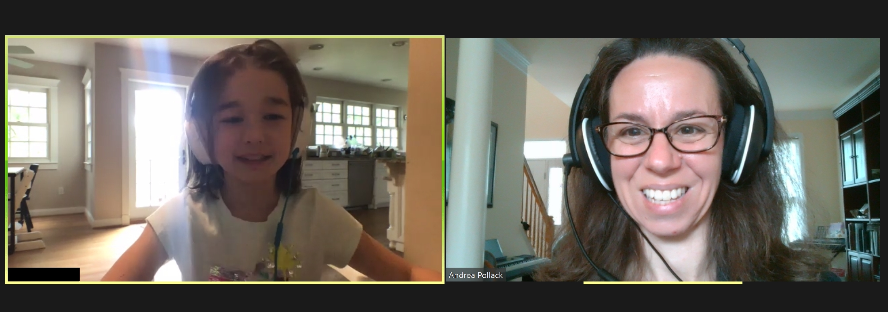
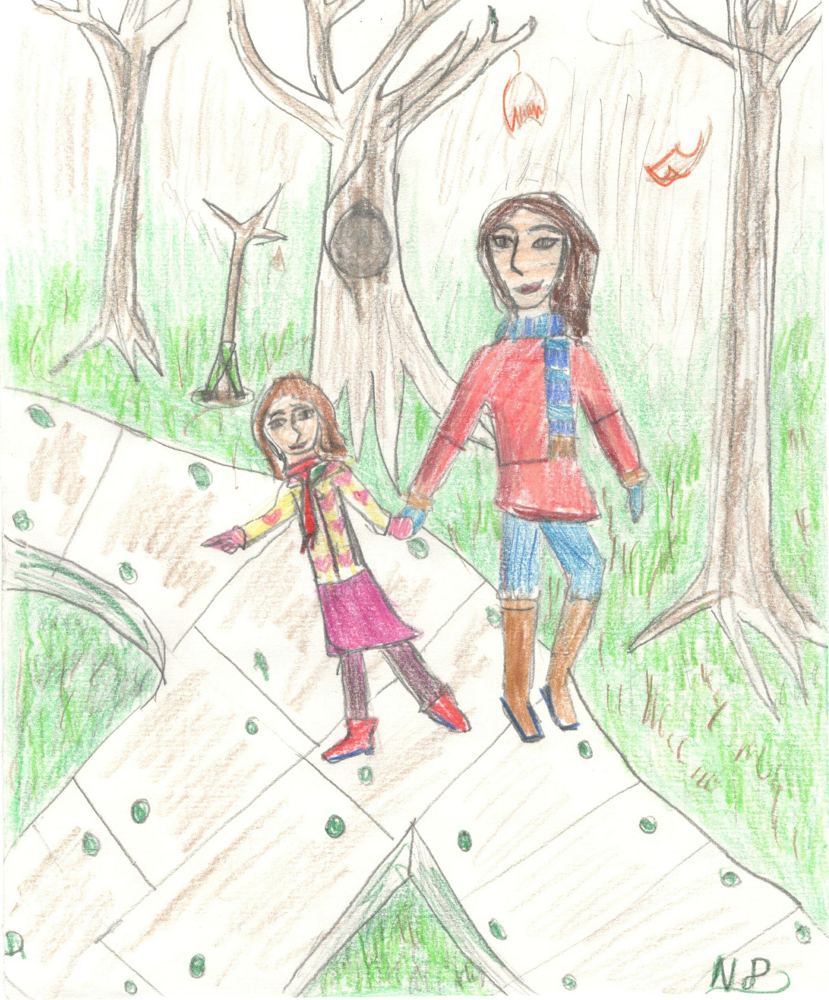
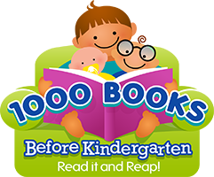
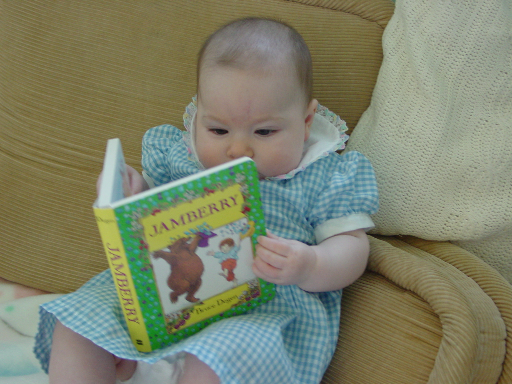
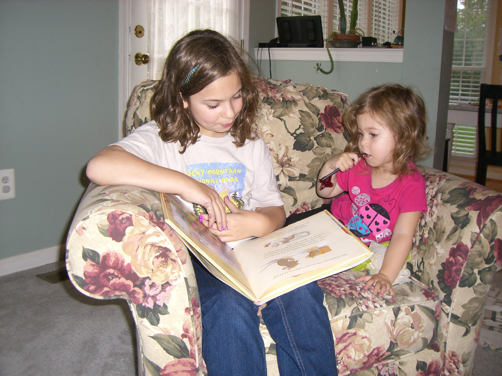

In March 2020, Virginia's governor announced an executive order to help
reduce the transmission of the novel Coronavirus. Virginians were asked,
among other things, to remain at home except to receive or provide essential
services or to obtain essential supplies such as groceries. With the
guidance and support of the American Speech-Language-Association,
Language Strides quickly pivoted alongside many other speech-language
pathology practices to provide services through telepractice.
This enabled clients to continue working toward their goals during this
extended period away from community exposure. Andrea engaged in professional
development programs to strengthen her telepractice skills, adapted therapy
materials for online presentation, and took a refresher course in infection
control.

Until we have a vaccine to protect us from the rampant spread of the
Coronavirus, we'll all need to take precautions in order to protect
the health of the community. The decision to welcome a professional into
your home for speech-language therapy is a personal one. We must combine what
we know of the current state of the pandemic with our own family's
specific health needs to arrive at our own individual level of tolerance for
risk. As restrictions are reduced, some of Language Strides' clients
are beginning to receive services in their homes again, while others have
chosen to continue receiving services through telepractice. Talk with Andrea
about your concerns and learn about Language Strides' policies and
precautions in order to decide what's right for you.
The American
Speech-Language-Hearing Association provides speech and language developmental
milestones. Keep in mind that children develop at different rates. When
looking at an individual's development, it may be helpful to consider
whether his or her communication abilities support age-appropriate
interactions, or whether interactions result in frustration.
Speech and Language Development from Birth to Age 5 Speech and Language Development in the Elementary Years
Longitudinal studies tell us that being a late talker at 24 months increases
a child's risk of having a low vocabulary at 48 months and predicts a
later age for school-readiness than typically developing children.
Late-Blooming or Language Problem?
They begin their lives fully dependent on their caregivers for food, love,
safety, even communication. Quickly, that begins to change. In a blink it
seems, they crack the code and begin using language to obtain all of those
things and more. Another blink, and they're reading the story on the back
of the cereal box and bargaining for a better allowance. It is a great gift
to behold.
Children don't come with instruction books. There are times,
though, when a few guidelines wouldn't hurt. What would your instruction
book say? Here are a few words from my own.

Breathe in. Breathe out. Repeat. You've got this.
Not
every day will be your best day, but every day will be the best you can do
that day. This little person already thinks you're pretty great.
Go
with your gut. That nagging feeling that what's working for the others
just isn't working for your child? Trust it. Let your intuition
guide you to seek solutions when something's just not right.
It
takes a village to raise a child. This African proverb is a reminder that
there are others who contribute to the lives of our children. A secure
parent-child relationship lays a foundation for a lifetime of growth, but we
can not underestimate the value of the rest of the community: Cousins, aunties,
fire fighters, teachers, mail carriers, passers-by. Our children can learn
from all of them, just as we can.
Put your phone or tablet in time out. Those precious after school hours are
loaded with things to do before we turn in at the end of the day. The outside
world has squeezed its way into our homes and even joined many families at
the dinner table. Our children look to us to learn the nuances of
communication. A responsive parent spends more time looking at his or her
children than at electronic or other devices. Children learn about secure
attachment and reciprocal communication from caregivers who are actively
engaged with them. Children go to bed early. The text messages, emails, and
social media can wait.

Perhaps you've seen the signs at your local library: 1,000 books before
Kindergarten. That sounds like a lot! Well, is it, really? If you read
just one bedtime story a night, in a year you will have read 365 books.
Babies will enjoy cuddling in your lap, listening to your voice, and holding
board books just as soon as you're ready to start a naptime and bedtime
schedule. That bedtime story quickly becomes a cherished part of the daily
routine for both children and parents. Eventually children become readers
themselves, but that's no time to give up on reading together. Keep up
your streak! That shared reading time is pretty powerful. Keep it going and
reap the rewards:

A regular routine time for reading provides structure and security for young
children. Children like knowing what's coming next, especially when it's something pleasant. A regular bedtime or naptime story signals the brain that
it's time to slow down and get ready for sleep.
Live by example. When we include books in our daily routine, we show our children that reading is important in our lives.
It's fun. Reading and rereading favorites is a time for laughter and playfulness that you'll both look forward to every day.
Reading books helps expand children's attention span and world knowledge. Following their interests with books, they'll be able to listen eagerly to longer and more complex stories. They may even enjoy some selections from the nonfiction section in the library.

Children who are read to will develop bigger vocabularies. Stronger listening vocabulary skills make for stronger reading comprehension. Children who are read to become better readers, better writers, stronger students, and are more likely to go on to read on their own.
Reading together helps children understand the connection between spoken and written words. As they become ready to learn to read, children who sit with an adult reader regularly begin to see patterns, such as repeated or rhyming words and the left-to-right sweep of your hand across the text. This edges them ever closer to readiness to read their own first words.
Reading together helps children learn about emotions. Children's books are filled with funny stories and exciting illustrations. Pair that with fun voices for the characters, and the book becomes a stage. For example, in Dr. Seuss' famous Green Eggs and Ham, Sam chases his poor friend around, offering him some food that he doesn't wish to eat. It is exasperating and exhausting! Our read aloud voices can show the frustration he experiences, and then later the more peaceful delight as he tries it and likes it after all. What a great way to build empathy!
Modeling is a powerful set of tools to boost learning. Use it to help children
learn speech and language skills, polite behaviors, even successful completion
of household chores. At its core, modeling is living by example. Our
children see and hear us and they begin to incorporate our speech sounds, our
grammar, our vocabulary, our gestures, even our coping techniques, and make
them their own.
Here is a modeling technique called recasting that you can use to draw attention
to something you want your child to learn to do. Here's how it works.
Suppose your child mispronounces the TH sound, and says, Mine is bigger ven
yours. You can recast his statement to help him notice your correct
model.
Start with a positive, as much as possible.
Yes!
Draw attention to his comment
Yours IS bigger!
Provide your model with emphasis
Yours is bigger Thhhhhan mine!
Move on happily. (Don't ask him to say it.)
Here's another example. Suppose your child is learning to use pronouns, and
she says, Him going out. You can recast his statement like this:
Start with a positive, as much as possible.
Yes!
Draw attention to his comment.
He is! I see that!
Provide your model with emphasis.
He is going out. Bye Bye!
Move on happily. (Don't ask him to say it.)
Notice how there was no correction. Children learn so much more when they feel
relaxed and secure. Giving them positive reinforcement by acknowledging their
message and then recasting it with a slightly higher model gives them just the
leg up they need to get to the next step. With lots of repetition, the child
achieves the learning without discouragement and has positive feelings about
successfully using her words to communicate.
Every summer, when the stores stock up on back-to-school supplies, I get that
song stuck in my head again. "It's the most wonderful time of the
year!" What does a holiday song have to do with back-to-school
shopping? Many years ago, an office supply store launched a tv ad for
school supplies in July. The ad featured a dad dancing with glee as he
tossed staplers and pencil sharpeners into his cart while his children
sulked. This left quite an impression!
The back-to-school season brings on happy anticipation for many families.
We get the new, bigger clothes, the fresh box of crayons, the new lunch bag
and backpack, sometimes even a new hairstyle. And then they hop on the bus,
and soon meet a new teacher in a new room. There's a new way for the
desks to be arranged, a new set of classroom procedures, a new group of kids
to sit with during lunchtime, and a chance to make a new impression with
friends and teachers.
Some of my readers just got a giddy, tingly feeling all over, and others just
cringed. Ask me how I know. If you are one of the readers who cringed
and felt a quickening of your heart rate, please know that you are not alone.
In fact, you're in really good company.
If you've been getting the feeling that your child's speech,
language, and learning needs are under-served where he does his learning,
there are several avenues to pursue. A first step is to conference with
your child's teachers and work out an informal plan to team up in
support of your child. You can request an evaluation and seek support
services at your neighborhood public school, even if your child does not
attend public school. You can seek private evaluations and supplement
school services with therapy or tutoring. You can consider your
family's resources and examine private school and home school options.
Ultimately, each family has its own journey. Lots of people will have opinions,
but parents are uniquely empowered to figure out what's best for their
families.
Moms do alot! It's not just moms, though, is it? In most
families, there's someone who takes on the lion's share of the
caregiving. Sometimes it's a mom or a dad, sometimes it's a
grandparent or even a hired caregiver. Always, it's a person who is
putting their all into the family effort, juggling more than they imagined,
and tucking the children in with hopes for a bright tomorrow.
It's a really hard job! When our
children learn differently, there's a whole extra layer of challenge.
It can be confusing when a child doesn't seem to develop the way
that others do. Maybe she doesn't respond when spoken to, or has trouble
learning routines at home. Maybe everything seemed fine until he started
school. When something is different, that caregiver often goes into overdrive
to support the struggling child. We find ourselves working harder to set them
up for academic and social successes. We race them to therapies and tutors
and entertain their siblings in waiting rooms. We want our children to
participate like all of the other kids and we want to see them succeed.
Caregiving parents, this page is dedicated to you.
We may not see your cape, but you're working like a superhero to support
your family's needs. This extra big job is not a sprint. It is the
marathon of a lifetime. It takes intention to take care of ourselves so that
we can sustain the effort and make magic within our families. It's so
worthwhile! What do you need to get the job done?
Cecelia
going on a walk (while the little one rides her bike)
Kathryn
family dinners
YOU
What helps you get the job done?
Jackie
ME-time & Starbucks dinners
Julie
yoga & gratitude
Jay
coffee & a little quiet time
Arzu
my precious family & my beloved friends
Alyson
nature & dancing
Robin
walking, evening snuggles, family traditions, writing
Sara
meditation, taking care of pets, good firm hugs
Language Strides LLC proudly serves the communities of Reston and Herndon, Virginia and the surrounding area.